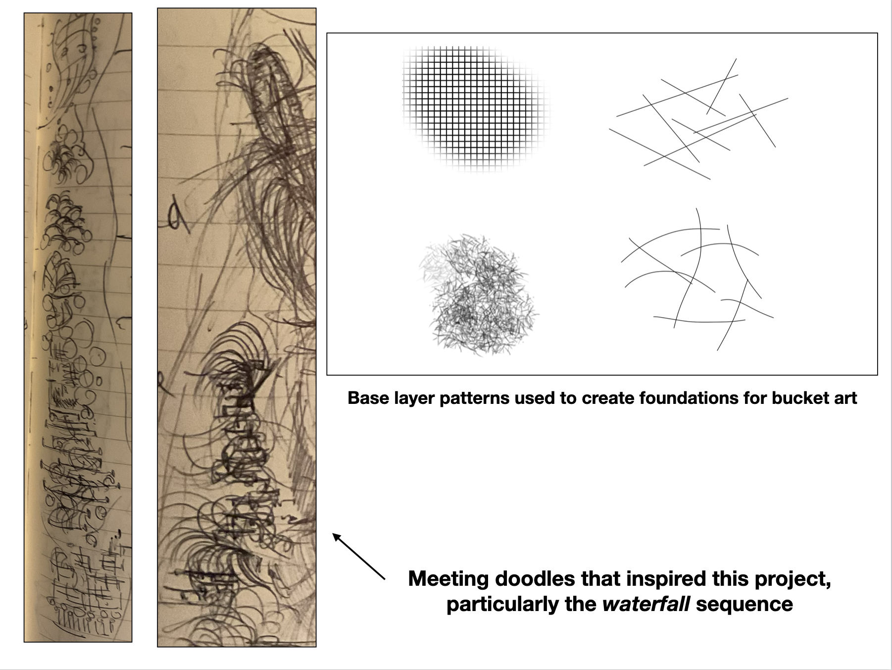
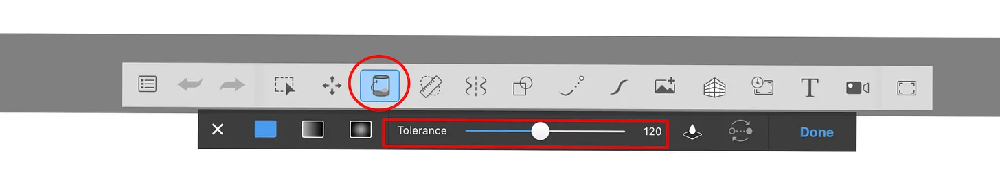
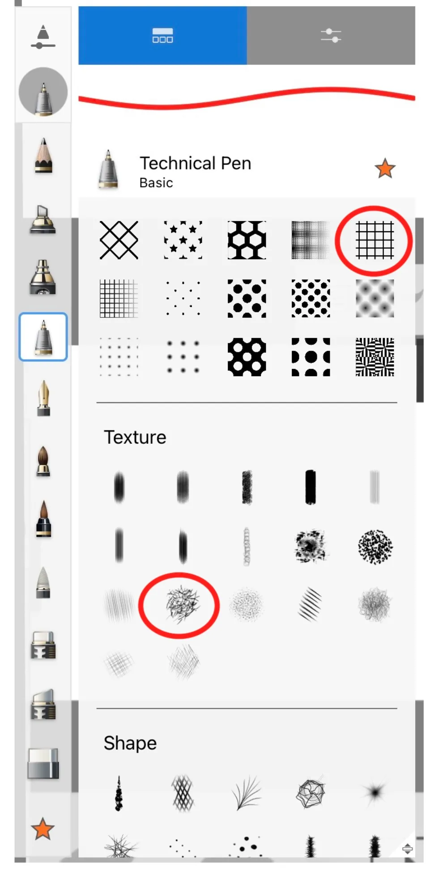

A brief note on the technique I use to make hand-crafted Bucket Art, which might be interesting both to those who want to make similar paintings, and to those wondering what elements the AI model has picked up on. I'll eventually add a demo video to this page, but until then hopefully this recipe is good enough. If you just want custom images in this style, just use the trained model on titlex.xyz.
The basic idea is to lay down interesting textured backdrops comprising grids, textured brush strokes, and random strikes, then use the flood fill tool to tease out interesting images. It's like Jackson Pollock's technique applied to a digital canvas where paint flows in much more interesting and controlled ways due to the prepared backdrop. The idea was born of some meeting doodles.

I call it bucket art because the main tool is the flood fill tool, usually represented with the bucket icon in painting apps. Here is what it looks like in the app I use, Autodesk Sketchbook on iPad.

The tolerance parameter is usually available in the better painting programs to control how easily the flood fill color leaks through gaps in sketches. If you want to try your hand at bucket art, you should probably use an app that has a bucket tool with a tolerance.
I call the technique Bucket Art because it relies heavily on the bucket tool. Normally, it’s just a boring convenience tool, designed to quickly fill large bounded areas with a particular color, with or without a gradient. Where the bucket gets to be fun is if you use it on complex backdrops that include a lot of complex intersecting geometry and textured elements. If you play with the tolerance and try to flood fill such a backdrop from various points (the technique is very sensitive to the precise point you pick), you get very interesting, organic-machinic effects. You need to do quite a bit of trial and error, and add constraining boundaries to the backdrop along the way, which is why this is only workable as a digital art technique. You have to repeatedly undo actions in search of ones that do things you like.
Though the term bucket might have Jackson Pollock type connotations, the reversibility of digital buckets and the behavior of the flood fill algorithm (which I’ll call a painting kernel by analogy with low-level computing kernels) cannot be achieved with analog tools.
The basic technique to create bucket art is very easy and takes no drawing skill at all. All it requires is an eye for spotting interesting patterns emerging, and developing those patterns by trial and error. Here is the algorithm:
- First, lay down an interesting abstract background pattern across large parts of the canvas. Grids (my app offers a grid brush), random strokes (either platonic primates like the lines, rectangles, or circles my tool offers, or freehand), or textured brushes. My app offers a variety of interesting grids and brushes. My two favorites are the basic square grid and one that sort of looks like rough scrubby grass. At this stage, it’s helpful sometimes to keep different elements of the backdrop on separate layers, and merge them strategically depending on how you want the next step to behave.
- Second, you get into the trial-and-error with the bucket tool, trying to get interesting effects. In a flat geometry with large bounded regions, the bucket tool simply creates large, uninteresting, flat fill areas. But on a textured backdrop, you have get all sorts of interesting diffusion effects. Tricks to try: repeatedly apply the same fill to the same point, especially with grid backdrops — you can progressive beading and “thickening” effects.
- Third, let your pareidolia (the tendency to see meaningful patterns in random input) cut loose. Watch for interesting shapes to emerge as you play with the bucket. As you spot a possibility you like, start nudging the bucket behavior towards emphasizing it, and converging on a color palette to help the image “appear.” I like to think of this as the image disclosing itself to you. It’s already there, latent in the dense information substrate you laid down in Step 1 (fun fact: there is a field in mathematics called Ramsey theory that explores how patterns start to emerge in random fields; for example if you randomly start making dots on a piece of paper, at n=3 you’ll almost certainly get a triangle).
- Fourth, if you really want to develop the picture well, it may be worth doing another round of textured-backdrop —> bucket fill games on a new set of layers. The ship example above has such a supporting feature — the abstract sun in the background.

You may already have a motif in mind that you’re trying to “solve” for, like a ship, waterfall, or skyline (some of my favorites), in which case you can nudge or distort the flood-fill game with constraining strokes, but be open to happy accidents. Don’t overdetermine the initial backdrop. If you’re aiming for ships, a two-tone textured backdrop for “sky” and “water” plus a few more vertical strokes that encourage ship-like contours to emerge is enough. Don’t try to sketch entire ships or wave patterns. A good rule of thumb is to never do anything strictly local. Everything should be a global pattern that perhaps has higher amplitude in some local areas.